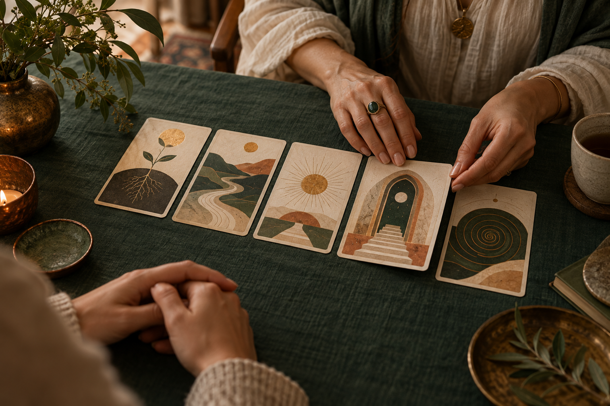
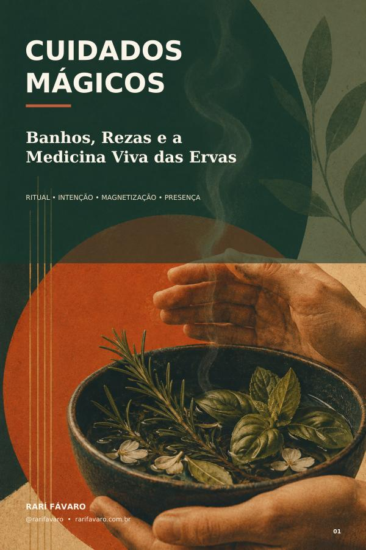

Reconhecer
Nomeamos a queixa verdadeira e o ponto que talvez você venha tentando contornar.
Consciência · autoinvestigação · transformação
Se você está cansado de voltar ao mesmo ponto, eu te acompanho por vídeo para enxergar o padrão com honestidade, investigar o que o sustenta e abrir espaço para uma nova escolha.
Dois caminhos, um propósito
O Tarot ilumina a situação e as escolhas. O Solo Sagrado aprofunda a investigação e acompanha a transformação. Comece pelo caminho que combina com o que você consegue sustentar hoje.

Ao vivo por vídeo · 50 min
Uma conversa profunda para organizar suas perguntas, ver o que está acontecendo sem fantasia e sair com mais clareza sobre seus próximos passos.
Método autoral · por vídeo
Um processo de consciência, autoinvestigação e reprogramação que integra a leitura radiestésica e o tratamento radiônico sem reduzir você a um gráfico.
Como eu trabalho
Eu não faço o processo no seu lugar. Eu crio presença, direção e ferramentas para que você reconheça o padrão e sustente uma escolha diferente na vida real.
Nomeamos a queixa verdadeira e o ponto que talvez você venha tentando contornar.
Olhamos crenças, emoções, repetições e, no Solo Sagrado, usamos a radiestesia como recurso complementar de leitura do campo.
Trabalhamos novas definições, práticas de consciência e o tratamento radiônico direcionado ao processo.
Você transforma percepção em escolha possível e escolha em movimento sustentado.
Eu sou o Rarí
Meu trabalho nasceu do encontro entre o Tarot, os estudos da consciência e anos observando como certas histórias voltam mesmo quando a gente já “entendeu” tudo racionalmente.
No Solo Sagrado, reúno conversa, autoinvestigação, técnicas de reprogramação, radiestesia e tratamento radiônico em um processo humano. Não é uma leitura fria, nem uma promessa mágica: é um espaço para você se perceber com coragem e responder de outra forma ao que vive.
“Às vezes, o que falta não é mais informação. É uma escolha nova sustentada com presença.”
Comunidade Sementes
Na Sementes eu compartilho conteúdos, práticas, avisos das lives, encontros e movimentos gratuitos. Entre sem pressão e fique pelo que fizer sentido para você.
Entrar gratuitamente na SementesO que você encontra
Conteúdos gratuitos
Dois materiais para você se observar com mais profundidade. São presentes, não iscas: baixe, leia e use o que conversar com seu momento.
E-book gratuito
Um guia para reconhecer imagens e padrões que influenciam a forma como você se percebe e age.

E-book gratuito
Banhos e rezas apresentados como práticas simbólicas de cuidado, intenção e presença.
Perguntas frequentes
O Tarot é uma consulta pontual de 50 minutos para clarear uma situação e suas possibilidades. O Solo Sagrado é um acompanhamento mais profundo, com investigação do padrão, práticas de consciência, radiestesia e tratamento radiônico complementar.
Sim. Os atendimentos acontecem online, ao vivo e com câmera, para que exista presença, conversa e vínculo durante o processo.
Não é essa a proposta do meu trabalho. Eu conduzo processos de autoconhecimento e consciência. A radiestesia entra como recurso de investigação, e o tratamento radiônico é aplicado de forma direcionada dentro do Solo Sagrado.
Não. Tarot, radiestesia e tratamento radiônico são práticas complementares de caráter espiritual e reflexivo. Não substituem acompanhamento médico, psicológico, jurídico ou financeiro quando necessário.
Pode. Me conte brevemente o que está vivendo no WhatsApp. Se o Tarot for suficiente, eu vou dizer. Se o seu momento pedir processo, eu explico o Solo Sagrado com honestidade.
Seu momento é hoje